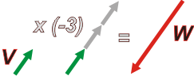

NO ME SALEN
APUNTES TEÓRICOS Y EJERCICIOS RESUELTOS DE FÍSICA DEL CBC

|
|

|
| VECTORES
Y VERSORES
- MULTIPLICACION POR UN NUMERO
Los vectores pueden multiplicarse por un número (real) cualquiera. Por ejemplo, si tenemos un vector V y lo multiplicamos por 3, el resultado es un nuevo vector que tiene la misma dirección y el mismo sentido que V, y un módulo 3 veces mayor. |
 |
De modo que multiplicar por un número es una operación que sólo afecta al módulo de los vectores.
En muchos libros de texto a esta operación se la llama producto por un escalar (pero no lo confundas con producto escalar, que es otra cosa). |
|
|
| Los símbolos para los vectores contienen una flecha arriba de la letra. |
|
La operación la escribiríamos así (usando símbolos correctos para los vectores, es decir, con flechita arriba):
V . 3 = 3 V = U
El número por el que se multiplica no necesariamente debe ser entero. Por ejemplo:
V . 3,54 = 3,54 V
El número por el que se multiplica un vector puede ser negatiivo. En ese caso además de alterar el módulo, invierte el sentido. |
|
| No me salen pide disculpas, pero HTML no dispone de algunos símbolos necesarios para los vectores. |
|
|  |
El signo menos del escalar cambia el sentido original del vector de partida de la operación. Simbólicamente:
V . (-3) = -3 V = W
|
|
|
En este
apunte usé
U, V, W...
pero cualquier letra (con una flechita arriba) es apropiada para representar
un vector. |
|
Esta operación permite expresar cualquier vector en función de otro. En particular, de otro vector cuyo módulo vale uno y sólo por eso recibe el nombre de versor.
VERSORES
Los versores son vectores cuyo módulo (o intensidad) vale 1. Los versores suelen indicarse con un sombrerito o con un bonete, en lugar de una flechita... pero no dejan de ser vectores como cualquier otro. |
|
|
 |
Así, si yo tengo un vector cualquiera, por ejemplo el vector A, me busco un versor que tenga su misma dirección y lo multiplico por su módulo. Por ejemplo, si el módulo de A vale 5...
A = 5 û
|
|
|
|
Se trata de un método práctico para construir vectores: partiendo de un versor que tenga la dirección y sentido necesario, se lo multiplica por un número y se obtiene el vector que uno quiera.
El versor, principalmente, contagia el carácter vectorial a un número. Esa es la idea.
Por convención los versores llevan un nombre típico según el nombre de la dirección (o eje) en que apuntan: |
|
 |
| dirección |
versor |
| x |
î |
| y |
ĵ |
| z |
k
(con sombrerito*) |
|
|
| *sombrerito es el nombre coloquial del acento circumflexo. |
|
| ir derecho a la siguiente de vectores |
|
| |
|
| Algunos derechos reservados.
Se permite su reproducción citando la fuente. Última actualización nov-09. Buenos Aires, Argentina. |
|
|
|